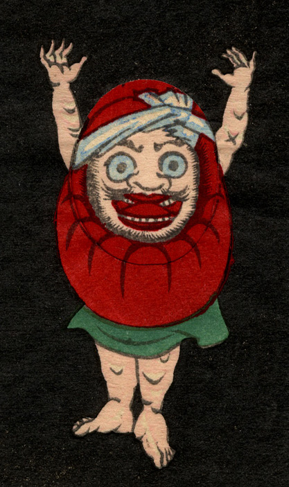

赤い達磨に手足が生えている。直立し、両腕を挙げている。人相は中年男性のようで、目を見開き、口を大きくあけている。頭部に鉢巻きを巻いている。
出典：親書誌：U426_nichibunken_0239：しん板かはりうつしゑ；シンパンカワリウツシエ／日付：2010／資源識別子：U426_nichibunken_0239_0004_0000
Copyright (c)2010- International Research Center for Japanese Studies, Kyoto, Japan. All rights reserved.